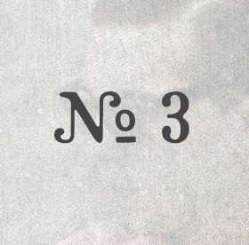

Session 1 dylan hodges & mark evitts

Session 2 tim gates

Nothing is better than meeting a fantastic musician and then playing on stage with them ten minutes later. Such was the case with Mark Evitts. We met, we introduced, and we picked bluegrass. Five minutes later we picked bluegrass in front of a whole bunch of people. Since then we have had Mark play with us every chance we can get. He’s been with us for all of our Nashville Christmas concerts and it wouldn’t be the same without him and his fiddle now. We consider him one of our closest musician friends here in Nashville and love him and his family.
Visit Mark Evitts Site
Every year at Christmas I play in the orchestra for Handel’s Messiah. Drew politely declines. A few years ago however, he was asked by Mark to play bluegrass for prelude. Suddenly, he was interested. It was in this unexpected place that Drew was first introduced to Dillon Hodges and a handful of other killer musicians. Drew has travelled to Dillon’s hometown of Florence, Alabama to play with him many times since.
And now that Dillon is a permanent resident of Nashville with his adorable wife Elise, we are taking full advantage. Dillon is a decorated flatpick guitarist with a soulful voice and a killer record about to release. Word of advice: do not ever pass up the chance to hear this guy play. Check out Dillon Hodges Site
Na na na na, na na na na…... our two-year-old Holland couldn’t talk for the longest time, but she could sing the hook to this song. And man did she repeat it. The oh-so-talented Cardin Mckinney and I got together and wrote this awhile back. It was cold and wintery outside, and we felt like lightening it up, enter: “The Reason”.
After I wrote this song I couldn’t stop playing it. I love it when that happens. It drove Drew crazy though because he would sit down to pick his guitar and it would be tuned funny. And no, I didn’t want to use my own guitar, and no, I don’t have a reason for that. “Little Girl” is your typical warning song. You love that boy; he’ll break your heart. You play with fire; you get burned. You re-tune your husband’s guitar, he gets mad. Why do we never believe it until it happens?
Attempting to find out the history of this tune will most likely lead you down the black hole that is the internet. Drew and I found ourselves watching painful mandolin videos before we realized an hour of our life was lost. Just take our word for it; Cherokee Shuffle is an old tune. It is very similar and may be related to another bluegrass song called Lost Indian, which is the version Mark knew when we first jammed on it together. Drew learned this song in Utah, playing in bluegrass circles with some of the best west coast pickers out there. He taught it to me and we’ve been performing it ever since.
Drew and I met playing folk music in college. I was on fiddle and he was on guitar in one of our groups. It was a match made in hillbilly heaven. Before I came along however, he was part of a bluegrass band called Long Gone. I’m pretty sure their main goal was to meet girls. Since all the boys in the band are now married, it must have worked. This song was one of their standbys, and the inspiration for their band name; it’s one of our favorites still.
Brought to you by Drew & LaceyWant to be a part of the After Bedtime Sessions? Send us an email